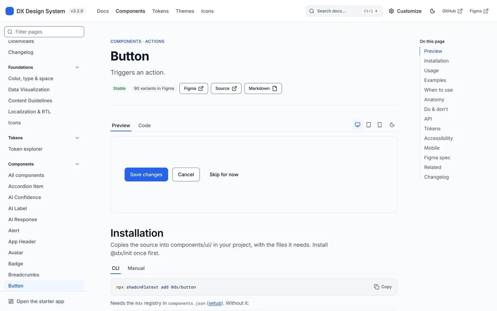

Decision 1
Make the website the handoff, not Dev Mode
Without a seatDevelopers guess token names and spacing from screenshots.
NowEvery component has a page with a live example, code, props and accessibility notes.
Instead of buying more seats, I moved everything a developer needs out of Figma and onto a public documentation site. Components install with one command and become code the project owns.
